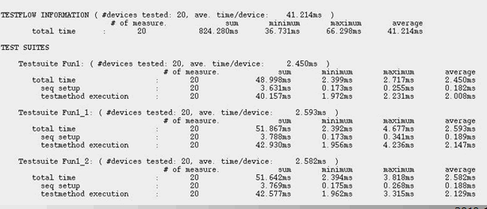

Tools to analyze the situation
Profiling a test program execution means to measure how much time is spent on the various parts of a test program.
The Test Time Tool (TTT tool) ensures that the test program is executed under controlled conditions:
- It shuts down the SmarTest Work Center to avoid interferences of GUI updates
- It uses its own application model
- It executes the testflow multi times to see the test time variance
- It varies the number of sites to see the impact of multisite testing
- The TTT tool binary is located at /opt/hp93000/soc/.service/bin/ttt.
To profile a test program using the TTT tool, proceed as follow:
- Instrument the test method code with calls to LOG_TIMER, START_TIMER, or STOP_TIMER if necessary.
- Run the test program under the control of the test time tool. DRLExecTimes is called automatically.
- For analysis load the resulting CSV files into a spreadsheet program of your choice.
Example
- Prepare the test program and setups.
- Add timer in the test method if it is needed as show in the following code
block:
DIGITAL_CAPTURE_TEST(1.0); ABORT_TEST(); FOR_EACH_SITE_BEGIN(); int site = CURRENT_SITE_NUMBER()-1; START_TIMER("timer1", "data upload begin"); adc_wave[site] = VECTOR (capture_label).getVectors (); STOP_TIMER('timer1", 'data upload end'); - Run the test program with the TTT
tool.
/opt/hp93000/soc/.service/bin/ttt
In this step, the test program will be executed multiple times in supervisor mode. DRLExecTimes will be called automatically.
- Get the result in ‘$Device/report/' or in the directory you specified for the TTT tool.
- Get ‘debug 3' test time information in ‘singleSite.ui' &'multiSite.ui' as shown below:

- Get code execution time marked by timer in data.edl.
- Convert the EDL file to a readable file with
DRLDump:
/opt/hp93000/soc/.service/bin/DRLDump -print data.edl > data.out